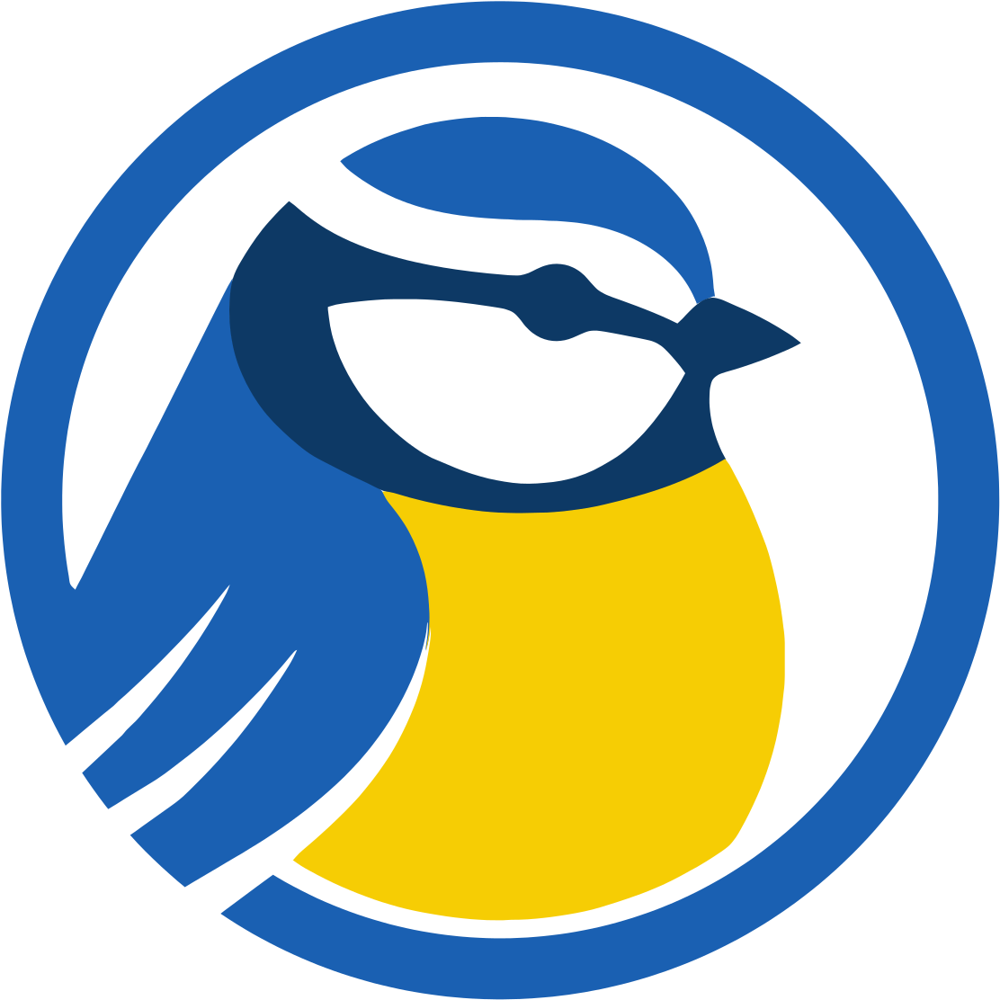

?
✖
TR ▾
☰
☰ Panelleri Göster
✕
📅 Takvim
▼
📍 Konumlar
▼
Tür 🔽
Gözlem 🔽
A→Z
Nadirlik ⭐
🗺️ İl/Bölge Bazında Grupla
📅 Tarih
🐦 Türler
Birey sayısı
Eşleşen konum yok.
🐦 Kuş Türleri
▼
Tarih ↓
Sayı ↓
Yer ↓
Birey ↓
A→Z
📅 Tarih
📷 Fotolar
🔗 eBird
📍 Konum
Birey sayısı
Eşleşen tür yok.
🏆 Kertikler
▼
🏆 Kertik Haritasını Aç
🗄️ Veri Yönetimi
▼
📂 eBird
➕ Yeni Ekle
📋 Veri Tablosu
Tür Adı (Türkçe veya Latince):
Konum Adı:
Tarih:
Adet (boş bırakırsan X):
Koordinat (Haritadan Seçin):
📍 Haritadan Seç
💾 Kaydet ve Haritayı Güncelle
Tüm verileriniz burada listelenir. Düzenleme ve silme işlemi anında uygulanır.
🌍 Çevreyi Keşfet
▼
Arama Yarıçapı:
10 km
Haritada herhangi bir noktaya tıklayarak seçtiğiniz çap içerisindeki son 30 günün canlı verilerini görüntüleyin.
🔄 Yükleme Ekranı
▼
⚙️ API Ayarları
▼
📤 Paylaş · Özet Kartı
▼
💬 Geri Bildirim
▼
Bir sorun mu var ya da bir fikrin mi? Bize yaz, uygulamayı birlikte geliştirelim. 💙
🐞 Hata bildir
💡 Öneri gönder
⭐ Uygulamayı değerlendir
📷 Instagram'da takip et
İpucu: Sorunu gösteren bir ekran görüntüsü alıp (güç + ses kısma) e-postaya eklersen çok yardımcı olur.
▼
✕
✖
✖
Maviş'e Sor
Maviş
· kuş gözlem asistanın
✖
Merhaba! Ben senin kişisel kuş gözlem asistanınım. Veritabanındaki tüm türlere ve konumlara hakimim. Bugün sana nasıl yardımcı olabilirim?
➤
⬅ Orijinal Görünüme Dön

Kuş
Atlası
Kişisel kuş gözlem haritan
Tüm verileriniz yalnızca cihazınızda işlenir ve güvenle saklanır.
📂 eBird ZIP veya CSV Dosyasını Seç
Veri Yüklemeden Haritaya Geç
🧪 Örnek veriyle dene
📥 eBird'den Veri İndir (Link)
Nasıl Yapılır?
1. Yukarıdaki düğmeyle eBird'den veri indirme talebi oluşturun.
2. E-postanıza gelen linke dokunup ZIP dosyasını indirin.
3. ZIP dosyasını açmadan doğrudan buraya yükleyin.
⚙️ API Bağlantı Ayarları
eBird API Anahtarı:
İptal
Kaydet